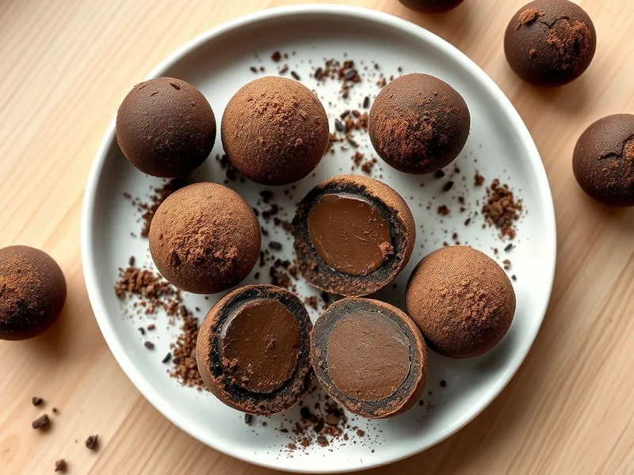

Шоколадные трюфели в какао
Шарики из шоколадного ганаша на сливках, обвалянные в какао
150 мин6 порц.261 ккал на порциюБ 3 · Ж 20 · У 17Европейская кухня
Открыть в приложении: порции, таймеры, список покупок
Продукты на 6 порц.
- Шоколад тёмный200 г
- Сливки 20%100 мл
- Сливочное масло30 г
- Какао-порошок2 ст. л.
Как готовить
- Поломайте шоколад мелкими кусочками в миску.
- Нагрейте сливки на среднем огне 2-3 минуты до первых пузырьков, залейте шоколад и оставьте на 2 минуты.
- Перемешайте до гладкого блестящего ганаша, вмешайте мягкое сливочное масло.
- Накройте миску плёнкой и уберите в холодильник на 2 часа, пока масса не станет плотной, как пластилин.
- Наберите массу чайной ложкой, быстро скатайте 18 шариков и обваляйте в какао.
Совет. Руки перед лепкой охладите холодной водой и вытрите насухо, тогда ганаш не будет таять в ладонях.